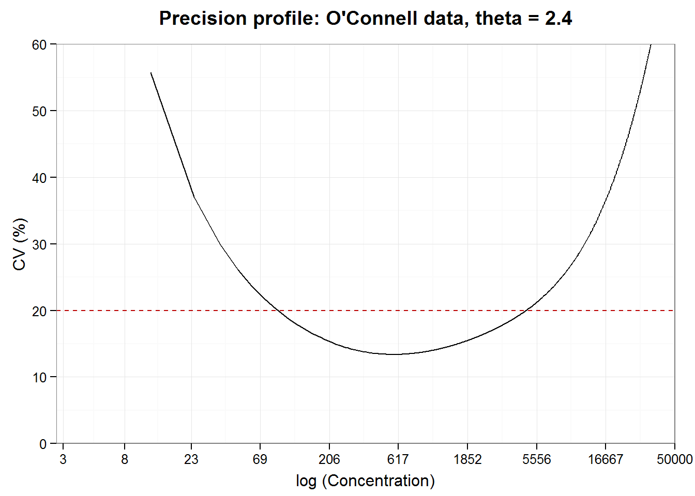

move background material to background tab
In clinical use, one observes the measured response from a test procedure and relies on the inverse model to predict the concentration of analyte in the patient’s sample. If we want to include a margin of error with this point estimate—and we do advocate making this available to users whether or not it is included in default summary output—an error model for the inverse function is needed. As we saw in the previous tutorial, this is a challenging part of calibration when the model in nonlinear and has heterogenoeous errors.
The approach suggested by the last section of the curve-fitting tutorial is a numerical approach to estimating the concentration and its precision statistics rather than analytical. By creating a grid of finely spaced results for the inverse model, we can get predictions for a single new observation or precision statistics for a range of concentrations. A popular statistic is the coefficient of variation (%CV). A precision profile is a plot of CV over a range of concentrations. (We could also calculate some measures of the Analytical Measurement Range [e.g. LoD, LoQ], but regulatory institutions recommend doing this as part of the reliability studies.)
Let’s see how we can return a single concentration estimate from a hypothetical patient sample. First, the point estimate is calculated from the estimated coefficients from the calibration curve and its inverse function. Next, the point estimate and its standard deviation is interpolated from the results grid saved from the last tutorial. From the standard deviation estimate for the predicted concentration, an expression of the uncertainty of the estimate can be calculated such as a prediction interval 1. We wrapped the steps to estimate a new concentration plus interval using the numerical method (i.e. with the grid) in a function, predictConc.4pl.
# ------------ Point concentration from model ------------------
# Retrieve the nlsLM model from previous tutorial
load("ocon.model.theta.2.4.RData")
# Extract model info (not within parent list)
ocon.model <- ocon.model.theta.2.4[[2]]
# Extract original data set (as data frame, not within a list)
ocon <- ocon.model.theta.2.4[[1]]
# The coefficients
coef(ocon.model)## small.x.asymp inf.x.asymp inflec hill
## 0.1131441 1.1136074 4205.8161929 -0.7503010# We loaded the inverse 4pl function in the preamble. We can use it to calculate a
# concentrations from a (hypothetically) observed response
Inv.4pl(0.18
, small.x.asymp = coef(ocon.model)[1]
, inf.x.asymp = coef(ocon.model)[2]
, inflec = coef(ocon.model)[3]
, hill = coef(ocon.model)[4]
)## x.hat
## 125.2459# ---- Point concentration and uncertainty interval from grid --------
# Import the inverse model grid
load("ocon.inv.theta.2.4.RData")
ocon.grid <- ocon.inv.theta.2.4
#str(ocon.grid)
ocon.grid$inv.grid[40:50, ]## yp xp sd.xp
## 40 0.2751010 469.9914 63.24037
## 41 0.2776961 482.0424 64.77966
## 42 0.2802592 494.0935 66.32801
## 43 0.2827912 506.1445 67.88540
## 44 0.2852929 518.1956 69.45179
## 45 0.2877653 530.2466 71.02716
## 46 0.2902091 542.2977 72.61148
## 47 0.2926251 554.3487 74.20469
## 48 0.2950140 566.3997 75.80675
## 49 0.2973764 578.4508 77.41762
## 50 0.2997131 590.5018 79.03724# Use
predictConc.4pl(ocon.grid, y.new = 0.18)## $estimate
## [1] 125.2941
##
## $conf.int
## [1] 80.99441 169.59375
##
## $pred.int
## [1] 62.64489 187.94327The point estimate from the inverse function is 125.2459 and from the grid is 125.2941. Notice that they are not identical. The grid contains discrete values so the new value had to be interpolated from the two closest values. The difference, however, is tiny compared to the uncertainty in the model. Hence we would report that for an observed response of 0.18, our model predicts a concentration of 125 units with a 95% prediction interval of 63 to 188 units. Obtaining such an interval using the analytic method would not have been a trivial calculation.
Now we derive the precision profile as a descriptor of precision over the concentration range of interest. Precision—or random error, depending on how you look at it—can be predicted for the whole range of values covered by the original calibration data by interpolating, or smoothing, between the predicted CV values. (Remember: we use the CV rather than the SD directly because the CV is scaled to the concentration.) Given the standard deviation of concentration, \(x\), the coefficient of variation equals \(SD(x)/x\), which are quantities in the grid. While the measure of variation or level of acceptable error may vary according to the standards of your industry, conventionally, a CV of 20% or less is considered acceptable. Let’s construct a precision profile plot of the estimated CV against the natural log of the nominal concentration and see which range of concentrations has an estimated CV of 20% or less.
# (this function could be moved to the functions page, but would need some
# more general arguments to use it for other assays)
precisionProfile <- function(sdXhat.object
, acceptable.cv = 20){
require(ggplot2)
# sdXhat.object <- ocon.grid
# Rename grid
d <- unique(sdXhat.object$inv.grid)
# x where cv is smallest
x.min.cv <- d$xp[d$sd.xp / d$xp == min(d$sd.xp / d$xp)]
# %CV
d$pcv <- 100 * d$sd.xp / d$xp
if(min(d$pcv) < 20){
# ---- Find x values where CV crosses 20% ---------
d$y.diff <- (d$pcv - 20)
# Get next y.diff
d$y.offset <- lead(d$y.diff)
# Get next xp
d$x.offset <- lead(d$xp)
# Intercept a for linear segments
# where line xp = a + (delta xp)/(delta y.diff) * y.diff
d$a <- d$xp - d$y.diff*(d$x.offset - d$xp)/(d$y.offset - d$y.diff)
# Lower limit
# Segment closest on left to y.diff = 0
closest <- min(d$y.diff[d$xp < x.min.cv & d$y.diff >= 0])
# Corresponding x values
x.low <- d$a[d$y.diff == closest]
# Upper limit
# Segment closest on left to y.diff = 0
closest <- max(d$y.diff[d$xp > x.min.cv & d$y.diff <= 0])
# Corresponding x values
x.high <- d$a[d$y.diff == closest]
}
else{x.low <- NA
x.high <- NA
}
cat("Working range (CV<20%):", round(x.low, 0), "--", round(x.high, 0))
# ---- Precision profile plot --------
# Need to generalise scale limits and breaks
ggplot(d[d$pcv<60,], aes(y= pcv, x = xp)) + geom_line() +
scale_y_continuous(limits=c(0, 60), expand = c(0, 0)) +
scale_x_continuous(limits=c(2.7, 50000), expand = c(0, 0),
trans = "log",
breaks = c(3, 8, 23, 69, 206, 617, 1852, 5556, 16667, 50000)) +
#geom_path(aes(x = m2.inv.grid$xp, y = m2.inv.grid$pcv.lcl), linetype = 3) +
# geom_path(aes(x = m2.inv.grid$xp, y = m2.inv.grid$pcv.ucl), linetype = 3) +
geom_hline(aes(yintercept = 20), colour="#BB0000", linetype = 2) +
labs(title = "Precision profile: O'Connell data, theta = 2.4",
x = "log (Concentration)", y = "CV (%)")
}
precisionProfile(ocon.grid)## Working range (CV<20%): 91 -- 4698
Working range and limits of quantification
Test developers are “responsible for determining the upper and lower limits of the measuring range for the methods and the precision of results at these limits” (NCCLS2004, p.2) We can obtain a rough estimate of the working range from the precision profile that is useful for guidance during development. Working range, limits of detection and quantification for licensing and user documentation, however, are determined using a more formal procedure described by regulatory agencies such as the CLSI.
In this tutorial, we have used the estimates from the calibration curve to predict the concentration, and the uncertainty of the predictions, of hypothetical new observations. We will repeat and build upon these concepts and techniques in future tutorials. The ELISA{gtools} data set includes quality control samples, which provides an additional test of the methods. Therefore, the ELISA concentration estimation and precision profile tutorial adds techniques to calculate ‘recovery’ and systematic errors.
[1] Quoted from: http://www.propharmagroup.com/blog/understanding-statistical-intervals-part-2-prediction-intervals. Alternatively, see http://www.itl.nist.gov/div898/handbook/pmd/section5/pmd521.htm